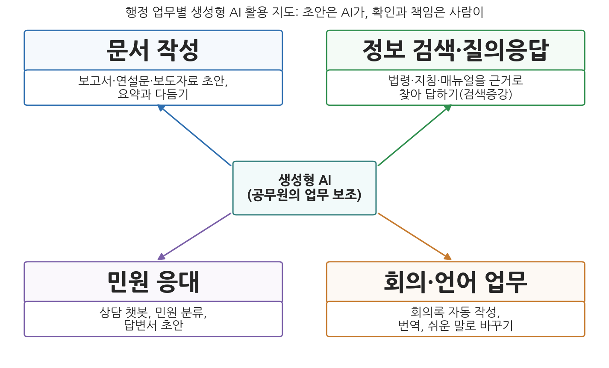
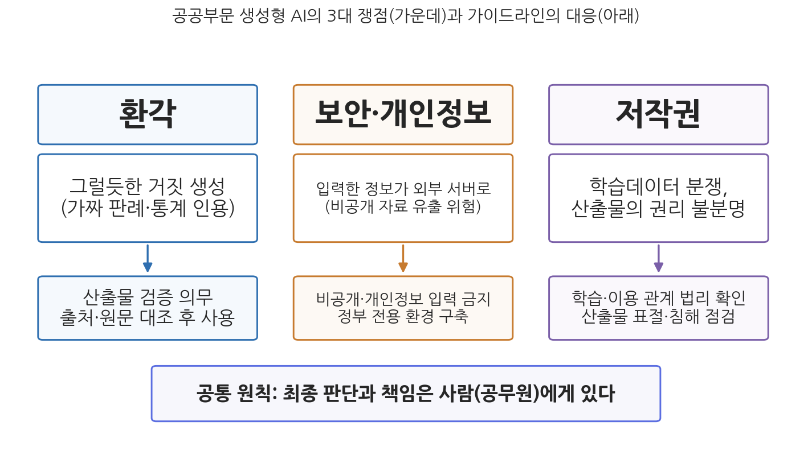

13주차 2차시. 생성형 AI와 행정 (2): 공공부문 도입과 쟁점
인공지능 기술을 통해 국민과 함께 만들어가는 친절하고 유능한 정부. (행정안전부, 국정과제 "세계 최고 AI 민주정부 실현"의 AI 민주정부 개념 정의, 2025)
이 장에서 배우는 것
2026년 상반기, 생성형 AI와 행정의 관계를 보여 주는 두 장면이 있었다. 첫 장면은 한국이다. 2026년 3월 시범 개통한 대화형 행정 포털 "AI 정부24"는 석 달 만에 누적 이용자 2,848만 명, 질의 처리 3,046만 건을 기록했다(행정안전부 발표, 2026년 6월). 국민이 정확한 민원 명칭을 몰라도 일상 언어로 물으면 2만여 종의 서비스 가운데 맞는 것을 찾아 주는 이 서비스는 12월 정식 개통을 앞두고 있다. 둘째 장면은 호주다. 2025년 10월, 세계적 컨설팅 기업 딜로이트의 호주 법인은 정부에 납품한 44만 호주달러짜리 검토 보고서의 대금 일부를 반환하기로 했다. 시드니대학의 한 연구자가 보고서 속 인용을 확인해 보니 존재하지 않는 학술 문헌과 지어낸 연방법원 판결문 인용이 들어 있었고, 딜로이트는 작성 과정에 생성형 AI를 사용했음을 사후에 공개했다.
같은 기술이 한쪽에서는 수천만 건의 민원을 안내하고, 다른 쪽에서는 정부 보고서에 가짜 각주를 심는다. 1차시에서 배운 생성형 AI의 두 얼굴, 곧 범용의 능력과 환각의 고질이 공공부문이라는 무대에서 동시에 상연되고 있는 것이다. 이 장은 그 무대를 살핀다. 각국 정부가 생성형 AI를 어떻게 도입하고 있는지, 공무원의 사용을 어떤 규칙으로 관리하는지, 환각·보안·저작권이라는 세 쟁점이 어떻게 다루어지는지, 그리고 이 모든 변화가 공무원이라는 직업의 역량을 어떻게 다시 정의하는지다. 구체적으로 다음을 배운다.
- 한국 정부의 생성형 AI 도입 경로: 개인의 실험에서 범정부 기반으로 (2023-2026)
- 해외 정부의 도입 사례: 영국, 미국, 싱가포르, 일본의 서로 다른 접근
- 공무원 AI 활용 가이드라인의 실제 내용과 공통 원칙
- 환각·보안·저작권 쟁점의 실제 사건과 제도적 대응
- 생성형 AI 시대에 공직 역량은 어떻게 재정의되는가
이 장은 하나의 질문을 따라 전개된다. "정부는 검증되지 않은 범용 기술을 어떻게 책임 있게 도입하는가?"
2.1 한국 공공부문의 도입 경로를 시간순으로 따라간다 → 2.2 영국·미국·싱가포르·일본의 사례를 비교한다 → 2.3 공무원 AI 활용 가이드라인의 실제 내용을 읽는다 → 2.4 환각·보안·저작권의 세 쟁점을 실제 사건으로 확인한다 → 2.5 공직 역량의 재정의 문제로 마무리한다.
2.1 한국: 개인의 실험에서 정부의 기반으로
금지도 방치도 아닌 길
1차시에서 보았듯 생성형 AI는 정부가 도입을 결정하기 전에 공무원 개인들이 먼저 쓰기 시작한 기술이다. 이런 기술 앞에서 조직이 택할 수 있는 길은 셋이다. 금지하거나, 방치하거나, 안전한 공식 사용 환경을 만들어 흡수하거나. 삼성전자가 2023년 정보 유출 사고 뒤 사내 사용을 전면 제한한 것(2.4절)이 첫째 길이라면, 한국 정부의 지난 3년은 셋째 길로 이동해 온 과정으로 읽을 수 있다.
경로를 시간순으로 따라가 보자. 출발점은 규칙이었다. 2023년 6월 국가정보원은 「챗GPT 등 생성형 AI 활용 보안 가이드라인」을 전 공공기관에 배포해, 금지 대신 "조건부 사용"의 틀을 깔았다(2.3절에서 상세히 본다). 다음은 실험이었다. 행정안전부는 2024년 6월 정부 전용 생성형 AI인 "AI 행정지원 서비스"의 시범 운영을 시작했다(행정안전부 보도자료, 2024년 6월 12일). 같은 해 4월에는 디지털플랫폼정부위원회가 공공부문 초거대 AI 도입 가이드라인을 내놓아 기관 단위 도입의 절차를 안내했다.
전환점은 2025년 말에 왔다. 과학기술정보통신부와 행정안전부는 2025년 11월 24일 "범정부 AI 공통기반" 서비스를 개시했다. 핵심은 보안 우려 때문에 인터넷망에서만 쓸 수 있던 민간 AI 모델을 정부 내부망(행정망)에서 쓸 수 있게 한 것이다. 내부망용 AI 챗서비스 2종을 제공하고, 시범 운영을 거쳐 2026년 3월부터 중앙·지방정부 전체로 확대한다는 계획이 발표되었다(대한민국 정책브리핑, 2025년 11월 24일). 공무원이 개인 계정으로 외부 서비스에 접속하던 상태에서, 정부가 관리하는 환경 안에서 쓰는 상태로의 이동이다.
제도의 뼈대도 같은 시기에 놓였다. 2024년 12월 국회를 통과한 AI기본법(인공지능 발전과 신뢰 기반 조성 등에 관한 기본법)이 2026년 1월 22일 시행되어, 12주차에서 본 것처럼 한국은 EU에 이어 포괄적 AI 법제를 실제 가동하는 나라가 되었다. 정치적 추진력도 더해졌다. 2025년 8월 발표된 새 정부의 123대 국정과제에는 행정안전부 주관의 "세계 최고 AI 민주정부 실현"이 포함되었고, 2025년 9월에는 대통령 직속 국가인공지능전략위원회가 출범했다.
국민을 향한 서비스: AI 정부24와 부처의 실험들
내부 업무용 기반과 별도로, 국민을 직접 상대하는 서비스도 늘고 있다. 도입 이야기에서 본 AI 정부24가 대표 사례다.
행정안전부는 2026년 3월 생성형 AI 기반의 대화형 민원 안내 서비스 "AI 정부24"를 시범 개통했다. 이용자가 "이사하면 뭘 신고해야 하나요"처럼 일상 언어로 물으면, AI가 의도를 해석해 정부24가 제공하는 2만여 종의 민원·혜택 서비스 가운데 맞춤형 정보를 안내한다. 시범 운영 약 3개월 동안 누적 이용자 2,848만 명, 질의 처리 3,046만 건을 기록했고, 2026년 12월 정식 개통과 함께 주민등록등본 등 민원서류를 대화로 발급하는 기능이 순차 도입될 예정이다. 행정안전부는 정식 개통을 준비하며 악의적 질문으로 AI를 오작동시키는 프롬프트 공격에 대한 대응을 강화하고 있다고 밝혔다. (출처: 행정안전부 발표와 관련 보도, 2026년 6월 29-30일)
이 사례가 보여주는 것은 생성형 AI가 행정 서비스의 오래된 문턱, 곧 "행정 용어를 알아야 서비스를 찾을 수 있다"는 문턱을 낮춘다는 점이다. 1주차에서 본 전자정부는 서비스를 온라인으로 옮겼지만, 찾는 부담은 시민에게 남겨 두었다. 대화형 안내는 그 부담을 시스템 쪽으로 옮긴다. 동시에 이 사례는 규모가 만드는 새 위험도 보여 준다. 석 달에 3천만 건이면, 오답률이 1%만 되어도 틀린 안내가 30만 건이다. 프롬프트 공격 대응을 강조하는 것 자체가, 시민을 직접 상대하는 생성형 AI가 새로운 공격면과 품질 관리 문제를 안고 있음을 방증한다.
부처 단위의 실험도 이어지고 있다. 국세청은 2024년 5월 종합소득세 신고 기간에 정부기관 최초로 AI 음성 상담을 도입했는데, 상담 연결 성공률이 전년의 24%에서 98%로 올랐고 전체 상담의 약 75%를 AI가 처리했다(국세청 발표, 2025년 4월). 법제처는 2024년 12월 일상 언어로 법령을 찾는 지능형 법령검색 서비스를 개통했고, 생성형 AI 기반 법령정보 서비스로의 고도화를 추진 중이다(법제처 보도자료, 2024년 12월). 지방정부 가운데는 서울시의 사례가 가장 잘 문서화되어 있다.
서울시는 2025년 8월 외부와 분리된 내부망(폐쇄망)에 자체 LLM을 도입한다고 발표했다. 문서 검색, 규정 확인, 보고서 작성 같은 반복 업무를 지원하는 직원용 시스템으로, 시민용 챗봇 "서울톡"에도 생성형 AI를 시범 적용했다. 2026년 1월 서울시가 공개한 운영 결과에 따르면, 2025년 12월 기준 본청 직원의 63% 이상(6,318명)이 생성형 AI를 활용했고 만족도는 89%였다. 보고서 작성에 걸리는 시간은 평균 3-4시간에서 1시간 수준으로, 자료 조사는 1-3시간에서 약 30분으로 줄었다고 측정되었다. (출처: 서울시 보도자료, 2025년 8월 7일과 2026년 1월 21일)
이 사례가 보여주는 것은 두 가지다. 첫째, "폐쇄망 자체 구축"이라는 설계 자체가 보안 쟁점(2.4절)에 대한 제도적 응답이다. 외부 서비스 사용을 단속하는 대신, 데이터가 밖으로 나가지 않는 환경을 만들어 수요를 흡수했다. 둘째, 효과의 측정 단위가 "문서 노동 시간"이라는 점이다. 1차시 1.3절에서 본 대로 생성형 AI의 일차 효과는 판단의 대체가 아니라 준비 노동의 단축으로 나타나고 있으며, 그 시간이 어디로 재투자되는가는 아직 열린 질문이다.
한편 이 모든 공식 인프라의 바깥에는 여전히 넓은 비공식 사용의 영역이 있다. 2025년 10월 국회 위성곤 의원실 조사에서 생성형 AI를 쓰는 공무원의 67.5%는 보안 통제가 없는 외부 인터넷망에서 쓰고 있었고, 59.4%는 관련 실무 교육을 받은 적이 없었다. 기반 구축과 실제 사용 관행 사이의 간극, 이것이 2026년 현재 한국 공공부문의 솔직한 현주소다.
2.2 해외: 같은 기술, 다른 접근
해외 정부들도 2023-2026년 사이에 비슷한 경로를 걸었지만, 강조점은 나라마다 다르다. 네 나라를 본다.
영국: 정부가 직접 만든 공무원 도구
영국 정부는 2025년 1월 공무원용 AI 도구 모음 "험프리(Humphrey)"를 발표했다. 영국 정치 시트콤 「예스 미니스터」의 노회한 사무차관 이름을 딴 이 패키지는 정부(과학혁신기술부)가 직접 개발했다.
험프리는 다섯 개 도구로 구성된다. 공공 의견수렴 응답을 분석하는 콘설트(Consult), 수십 년치 의회 회의록을 검색·분석하는 팔렉스(Parlex), 회의를 보안 환경에서 전사·요약하는 미닛(Minute), 정책 요약과 브리핑 작성을 돕는 레드박스(Redbox), 법령을 조사·요약하는 렉스(Lex)다. 2025년 5월 콘설트가 스코틀랜드 정부의 미용시술 규제 의견수렴(응답 2,000건 이상) 분석에 처음 실전 투입되었는데, 인간 분석가와 대체로 일치하는 결과를 냈고, 영국 정부는 연간 약 500건의 의견수렴에 전면 적용하면 연 75,000일 분량의 분석 노동(인건비 약 2,000만 파운드)을 절감할 수 있다고 추정했다. 미닛은 같은 달 25개 지방의회 시범에서 회의 1시간당 약 1시간의 행정업무를 줄였다고 보고되었다. 시민용으로는 정부 포털의 안내 챗봇 "GOV.UK Chat"을 별도로 시험해 왔는데, 2026년 3월 공개된 18개월간의 시험 결과에서 답변 정확도가 76%에서 90%로 개선되었고, 시스템을 속이려는 시도 508건이 전부 차단되었다고 밝혔다. (출처: 영국 정부 보도자료 2025년 1월 21일, 5월 14일, 5월 23일; GDS 블로그 2026년 3월 16일)
이 사례가 보여주는 것은 "정부 내제화" 전략이다. 민간 서비스를 사다 쓰는 대신 정부가 도구를 만들어 공무원에게 배포하면, 데이터 통제와 행정 업무 맞춤화가 쉬워진다. 눈여겨볼 것은 평가의 방식이기도 하다. 영국은 도구마다 시범 적용과 정량 평가(정확도, 절감 시간)를 거쳐 확대 여부를 정하는 단계적 접근을 취했고, 그 평가 결과를 공개했다. 10주차에서 본 영향평가의 논리가 생성형 AI 도입에 적용된 모습이다.
미국: 조달의 힘으로 밀어붙이기
미국 연방정부의 접근은 조달 중심이다. 2025년 7월 백악관이 발표한 "미국 AI 행동계획(America's AI Action Plan)"은 연방기관의 AI 도입 확산을 국가 전략으로 못 박았고, 한 달 뒤 조달청(GSA)이 이를 실행에 옮겼다. 2025년 8월 GSA는 오픈AI, 앤스로픽, 구글과 잇따라 계약을 맺어, 참여 연방기관이 기관당 연 1달러(구글은 0.47달러)라는 상징적 가격에 챗GPT 엔터프라이즈, 클로드, 제미나이를 쓸 수 있게 했다(GSA 보도자료, 2025년 8월 6일, 12일, 21일). 같은 달 연방기관이 여러 AI 모델을 보안 환경에서 무상으로 시험·평가할 수 있는 플랫폼 USAi도 출범했다. 도입 규모는 통계로 확인된다. 연방기관들이 공개하는 AI 사용사례 인벤토리(10주차에서 본 투명성 장치)에 따르면 2025년 보고된 사용사례는 56개 기관 3,611건으로, 전년(1,757건)의 두 배가 넘었다(2026년 4월 보도). 1주차에서 본 2023년 말의 조사(23개 기관 약 1,200건)와 비교하면 2년 만에 세 배 규모다. 다만 1달러 계약은 1년 한정의 판촉 성격이 강하고, 특정 기업 모델에 대한 정부의 의존을 키운다는 비판도 있다. 민간 플랫폼에 기대는 미국형과 직접 만드는 영국형의 대비는, 11주차에서 본 거버넌스 설계의 선택 문제를 다시 보여 준다.
싱가포르: 가장 깊숙한 일상화
싱가포르는 공무원 개개인의 일상 도구화에서 가장 앞서 있다는 평가를 받는다.
싱가포르 정부기술청(GovTech)은 2023년 공무원용 LLM 어시스턴트 "페어(Pair)"를 개발해 그해 하반기 전체 공무원에게 배포했다. 정부 계약으로 보안을 확보한 상용 LLM 기반으로, 정부 노트북에서 내부 자료를 안전하게 다룰 수 있게 설계되었다. 2025년 11월 디지털개발정보부의 국회 답변에 따르면 공무원 15만 명 가운데 약 80%가 페어를 사용해 보았고, 기관별 내부 문서 기반 챗봇을 코딩 없이 만드는 플랫폼 "AI봇(AIBots)"으로는 2만 개 이상의 챗봇이 만들어졌다. 2024년 4월 도입된 대민 회신 초안 도구 스마트컴포즈(SmartCompose)는 90개 이상 기관에 퍼졌다. 2025년 10월부터는 전 공무원 대상 AI 리터러시 교육이 필수화되었고, 2026년 6월에는 공직에서 쓰이는 AI 에이전트를 등록·관리하는 레지스트리 구축과 2026년 하반기 에이전트 확대 계획이 발표되었다. (출처: 싱가포르 디지털개발정보부 국회 답변 2025년 11월, GovTech 공식 자료, 현지 보도 2026년 6월)
이 사례가 보여주는 것은 도입의 "깊이"다. 싱가포르는 하나의 대표 서비스를 세우는 대신, 공무원 누구나 쓰는 기본 도구(페어), 부서가 스스로 만드는 맞춤 도구(AI봇), 특정 업무 전용 도구(스마트컴포즈)의 세 층을 쌓고, 그 위에 필수 교육과 에이전트 등록부라는 관리 장치를 얹었다. 1차시에서 본 에이전트 국면까지 관리 체계에 포함시킨 첫 사례군에 속한다는 점에서, 기술 도입과 거버넌스 정비를 같은 속도로 진행하는 모델이라 할 수 있다.
일본과 그 밖: 후발 주자의 속도전
일본 디지털청은 2025년 5월 자체 개발한 생성형 AI 업무 환경 "겐나이(GENNAI)"를 청 내에 도입했고, 2026년 3월에는 이를 전 부처로 넓혀 국가공무원 약 18만 명을 대상으로 하는 대규모 실증(2026년 5월부터 2027년 3월까지)을 시작한다고 발표했다. 국회 답변서 작성 지원, 법령 조사 같은 행정 특화 기능이 포함된다(디지털청 발표, 2026년 3월 6일). 호주는 2024년 상반기 60여 개 기관 7,600여 명이 참여한 범정부 코파일럿 시범을 운영하고 독립 평가 보고서를 공개했는데, 참여자의 86%가 계속 사용을 원했지만 활용도는 교육 이수 여부에 크게 좌우되었다(호주 디지털전환청, 2024년 10월). OECD는 2025년 발간한 보고서 「AI와 함께 통치하기(Governing with Artificial Intelligence)」에서 각국 정부의 AI 활용 사례 200건을 분석하며, 정부의 생성형 AI 활용이 아직은 다국어 챗봇, 법령·문서 요약처럼 좁게 정의된 용도에 집중되어 있다고 진단했다. 요컨대 2026년 현재 각국은 도입 경쟁의 한복판에 있지만, 그 실질은 "행정의 재발명"보다 "문서 노동의 자동화"에 가깝다는 냉정한 평가가 함께 있는 것이다.

그림 13-3을 읽는 법은 이렇다. 가운데가 생성형 AI이고, 네 모서리가 이 절에서 본 국내외 사례들이 분포하는 네 가지 업무 영역이다. 문서 작성(서울시 보고서 초안, 영국 레드박스), 정보 검색·질의응답(법제처 법령검색, 영국 렉스, 싱가포르 페어), 민원 응대(AI 정부24, 국세청 AI 상담, GOV.UK Chat), 회의·언어 업무(영국 미닛, 싱가포르 스마트컴포즈)다. 이 그림에서 알 수 있는 것은 각국의 사례가 결국 이 네 영역의 조합이라는 점, 그리고 제목이 말하듯 어느 영역이든 "초안은 AI가, 확인과 책임은 사람이"라는 원칙 위에서 운영되고 있다는 점이다.
2.3 공무원의 AI 활용 가이드라인
기술이 먼저 퍼지고 규칙이 뒤따라온 만큼, 각국 정부는 법 개정보다 빠른 수단인 가이드라인으로 대응해 왔다. 한국의 주요 가이드라인 세 개를 읽어 보자. 실제 조문의 내용이 중요하다.
국가정보원 「챗GPT 등 생성형 AI 활용 보안 가이드라인」(2023년 6월). 공공기관 생성형 AI 규칙의 원형이다. 전면 금지가 아니라 조건부 허용을 택하면서 다섯 가지 필수 보안수칙을 제시했다. (1) 비공개 업무자료와 개인정보 등 민감 정보의 입력 금지, (2) 생성물의 정확성·윤리성·적합성 재검증, (3) 생성물 활용 시 지식재산권·저작권 등 법률 침해 여부 확인, (4) 연계·확장 프로그램 사용 시 안전성 확인, (5) 로그인 계정의 보안 설정 강화다(국가정보원 배포, 2023년 6월). 다섯 수칙이 2.4절에서 볼 세 쟁점(보안, 환각, 저작권)과 정확히 겹친다는 점을 기억해 두자.
디지털플랫폼정부위원회·한국지능정보사회진흥원 「공공부문 초거대 AI 도입·활용 가이드라인」(2024년 4월, 2.0판 2025년 4월). 개인의 사용 수칙이 아니라 기관의 도입 지침이다. 1.0판은 사회문제 해결, 대국민 서비스 혁신, 일하는 방식 효율화라는 3대 전략목표를 세우고 "무분별한 도입 지양"을 명시했다. 유행을 좇는 전시성 도입을 경계한 것이다(2주차에서 본 효율 중심 도입의 함정과 같은 문제의식이다). 2025년 4월의 2.0판은 범정부 공통기반 활용 방식과 데이터 보안등급 분류 등 보안 통제 항목을 추가해, 2.1절에서 본 인프라 변화를 반영했다(디지털플랫폼정부위원회 보도자료, 2025년 4월 16일).
개인정보보호위원회 「생성형 AI 개발·활용을 위한 개인정보 처리 안내서」(2025년 8월). 생성형 AI의 수명주기를 목적 설정, 전략 수립, 학습·개발, 적용·관리의 4단계로 나누어 단계별 개인정보 보호 기준을 제시했다. 특히 인터넷에 공개된 개인정보를 AI 학습에 쓸 수 있는 요건을 다루어, 7주차에서 본 공개 정보와 개인정보보호의 긴장에 대한 행정 해석을 내놓았다(개인정보보호위원회, 2025년 8월 6일).
해외의 가이드라인들도 뼈대는 비슷하다. 민감 정보 입력 제한, 산출물 검증, 최종 책임의 인간 귀속이다. 다만 강조점의 차이가 있다. 영국과 호주의 지침이 "활용을 장려하되 안전하게"라는 촉진 기조라면, 한국의 초기 지침은 보안 기관이 먼저 틀을 잡았다는 점에서 보안 우선 기조가 상대적으로 강했다. 어느 쪽이든 공통 원칙은 하나로 수렴한다. 생성형 AI는 보조자이고, 산출물에 대한 최종 판단과 책임은 사람에게 있다. 4주차에서 본 책임성 논의의 언어로 말하면, 가이드라인들은 책임의 소재를 도구가 아니라 사용자에게 고정함으로써 책임 공백을 봉쇄하려는 장치다.
가이드라인은 법이 아니다. 위반해도 그 자체로 처벌되지 않는 연성 규범이며, 존재한다고 지켜지는 것도 아니다. 2025년 10월 국내 조사에서 생성형 AI를 쓰는 공무원의 3분의 2가 여전히 외부 인터넷망에서 쓰고 있었다는 사실은, 수칙("민감 정보 입력 금지")과 관행 사이의 거리를 보여 준다. 규칙의 실효성은 문서가 아니라 교육, 안전한 대체 수단(내부망 서비스), 점검 체계가 함께 갖춰질 때 생긴다. 4주차에서 본 "서류상의 책임 장치가 형식화되는" 문제는 가이드라인에도 그대로 적용된다.
2.4 환각·보안·저작권: 세 개의 마찰 지점
이제 도입의 이면, 곧 사고와 분쟁의 기록을 본다. 1차시에서 원리로 배운 위험들이 실제 사건으로 나타난 현장이다.

그림 13-4를 읽는 법은 이렇다. 세 기둥이 각각 하나의 쟁점이다. 위 상자가 쟁점의 이름, 가운데가 문제의 내용, 아래가 각국 가이드라인이 내놓은 대응이며, 맨 아래 상자가 세 기둥을 관통하는 공통 원칙이다. 이 그림에서 알 수 있는 것은 세 쟁점이 각기 다른 국면(산출물의 품질, 입력의 통제, 권리의 귀속)에서 발생하지만, 대응의 논리는 모두 "사람의 확인과 책임"으로 수렴한다는 점이다.
환각: 산출물의 문제
1차시에서 마타 대 아비앙카 사건(2023)으로 본 환각은 이후 산발적 해프닝이 아니라 구조적 현상임이 드러났다. 법률 연구자 다미앵 샤를로탱이 운영하는 집계에 따르면 법원 제출 문서에서 AI가 지어낸 판례나 인용이 문제 된 사건은 전 세계적으로 2026년 초 기준 1,200건을 넘어섰고, 관련 법원 결정의 대부분이 2025년에 집중되었다(관련 보도 종합). 정부 문서도 예외가 아니었다. 도입 이야기에서 본 딜로이트 호주 보고서 사건(2025년 10월)은 정부가 발주한 용역 보고서에 환각이 스며든 경우로, 딜로이트는 수정판에서 생성형 AI 사용을 공개하고 계약 최종 지급분(약 9만 7천 호주달러)을 반환했다. 시민을 직접 상대하는 서비스에서도 사고가 났다. 뉴욕시가 2023년 10월 소상공인 지원용으로 공개한 챗봇 "마이시티(MyCity)"는 2024년 3월 탐사보도매체 더 마크업의 검증에서 "현금 결제를 거부해도 된다", "종업원의 팁을 가져가도 된다"처럼 시 조례와 연방 규정에 어긋나는 답변을 내놓은 것이 확인되었고, 논란 끝에 2026년 2월 서비스가 종료되었다(The Markup, 2024년 3월 29일과 2026년 1월 30일).
세 사건의 공통 교훈은 검증의 위치다. 환각은 원리상 완전히 없앨 수 없으므로(1차시 1.4절), 대응은 발생 억제(공식 문서에 근거를 묶는 검색증강생성)와 사후 검증(사람의 확인)의 이중 방어로 갈 수밖에 없다. 그래서 모든 가이드라인이 산출물 검증을 의무화하지만, 유의할 지점이 있다. 검증 부담이 커지면 "AI로 아낀 시간을 AI 검증에 쓰는" 역설이 생기고, 검증이 요식이 되면 4주차에서 본 인간 검토의 형식화가 재연된다. 뉴욕시 사례는 특히 정부의 챗봇이 틀리면 그것이 단순 오정보가 아니라 정부의 이름으로 전달된 잘못된 행정 안내가 된다는 점에서, 민간 챗봇의 오류와는 무게가 다르다는 것을 보여 주었다.
보안: 입력의 문제
생성형 AI의 보안 위험은 해킹 이전에 사용 그 자체에서 나온다. 외부 서비스에 입력한 내용은 외부 서버로 전송되고, 경우에 따라 모델 학습에 쓰일 수 있다. 상징적 사건이 삼성전자의 2023년 유출이다. 삼성전자 반도체 부문은 2023년 3월 챗GPT 사용을 허용했다가 약 20일 사이에 세 건의 사고를 확인했다. 직원들이 오류 해결을 위해 설비 관련 소스코드를, 코드 최적화를 위해 수율 관련 프로그램을, 회의록 작성을 위해 회의 녹취를 챗GPT에 입력한 것이다. 회사는 2023년 5월 사내 기기와 내부망에서 외부 생성형 AI 사용을 전면 제한했다(당시 언론 보도 종합, 2023년 4-5월). 유출자는 해커가 아니라 업무를 잘하려던 직원들이었다는 점이 이 사건의 핵심이다. 같은 위험이 행정에는 더 무겁게 적용된다. 공무원이 다루는 것은 기업 기밀이 아니라 국민의 개인정보와 비공개 행정정보이기 때문이다. 2025년 10월 조사에서 확인된 "외부망 사용 67.5%"라는 숫자가 문제인 이유이고, 각국의 대응이 결국 내부망 전용 환경(범정부 AI 공통기반, 서울시 폐쇄망 LLM, 싱가포르 페어, 일본 겐나이)의 구축으로 수렴한 이유다. 규제 기관이 서비스 자체를 멈춰 세운 사례도 있었다. 이탈리아 개인정보보호청은 2023년 3월 말 데이터 처리의 법적 근거 문제를 들어 챗GPT의 자국 서비스를 잠정 중단시켰고, 오픈AI가 고지·옵트아웃 장치를 보완한 뒤인 4월 말 재개를 허용했다. 7주차에서 본 개인정보 법제가 생성형 AI에 실제로 작동한 초기 사례다.
저작권: 권리의 문제
저작권 쟁점은 두 방향에서 온다. 들어가는 쪽(학습 데이터)과 나오는 쪽(산출물의 권리)이다. 학습 데이터 쟁점의 대표 소송이 뉴욕타임스 대 오픈AI다. 뉴욕타임스는 2023년 12월 자사 기사가 무단으로 학습에 사용되었다며 오픈AI와 마이크로소프트를 제소했고, 법원은 2025년 3월 피고의 각하 신청을 대부분 기각해 본안 심리로 넘겼다. 2026년 1월에는 증거 조사를 위해 비식별화된 챗GPT 대화 기록 2,000만 건의 제출을 명령하는 결정이 확정되었고, 2026년 7월 현재 소송은 계속 중이다(법원 결정과 관련 보도, 2025-2026년). AI 학습이 저작권법상 공정이용인지에 대한 확립된 답은 아직 없으며, 영국에서는 2025년 11월 게티이미지 대 스태빌리티AI 판결이 "모델 자체에 원저작물의 복제물이 저장되어 있지는 않다"고 보는 등 나라마다 법리가 형성되는 중이다. 산출물 쪽의 기준은 상대적으로 분명해졌다. 미국 저작권청은 2025년 1월 보고서에서 인간의 저작이 저작권의 근본 요건이므로 AI가 전적으로 생성한 산출물은 보호 대상이 아니며, 프롬프트 입력만으로는 인간 저작으로 인정되지 않는다고 정리했다(미국 저작권청, 2025년 1월 29일). 한국에서는 문화체육관광부와 한국저작권위원회가 2023년 12월 「생성형 AI 저작권 안내서」를 내어 AI 사업자, 저작권자, 이용자별 유의사항을 안내했고, 2026년 1월 시행된 AI기본법은 생성형 AI 산출물임을 이용자가 알 수 있게 표시하도록 하는 의무를 도입했다(12주차 참조).
행정에 이 쟁점이 갖는 함의는 세 가지다. 공무원이 생성형 AI로 만든 자료가 타인의 저작물을 침해할 수 있다는 것(가이드라인의 확인 의무), AI가 만든 공공 콘텐츠의 권리 관계가 불분명할 수 있다는 것, 그리고 정부가 조달하는 AI 서비스 자체가 진행 중인 저작권 분쟁의 당사자일 수 있다는 것이다. 법이 기술을 뒤따라가는 전형적 국면이며, 12주차에서 본 "규제의 시차" 문제가 저작권 영역에서 반복되고 있다.
2.5 공직 역량의 재정의
마지막 질문이다. 문서 초안을 기계가 쓰고, 법령 검색을 기계가 하고, 민원 안내를 기계가 하는 시대에 공무원의 역량은 무엇인가.
첫째 답은 검증하는 능력이다. 생성형 AI 시대에 공무원의 부가가치는 텍스트의 생산에서 텍스트의 판별로 이동한다. 그럴듯한 초안에서 지어낸 인용을 찾아내고, 챗봇 답변의 법적 정확성을 확인하고, 겉보기에 완성된 보고서의 논리 공백을 짚는 일이다. 딜로이트 보고서의 환각을 잡아낸 것은 AI가 아니라 그 분야를 아는 연구자였다. 검증은 도메인 지식 없이 불가능하므로, "AI가 있으니 전문성이 덜 필요하다"는 통념은 거꾸로다. 산출물이 쉬워질수록 그것을 판별할 전문성의 값은 오른다.
둘째 답은 질문하는 능력이다. 생성형 AI의 산출 품질은 지시의 품질에 좌우된다. 좋은 지시는 유행어처럼 번진 "프롬프트 기술"의 문제라기보다, 자기 업무의 목적과 제약을 명확한 언어로 정의하는 능력의 문제다. 무엇을 위한 문서인지, 누구를 설득해야 하는지, 어떤 조건을 지켜야 하는지를 아는 사람만이 기계에게 제대로 시킬 수 있다. 1주차 강의에서 "생각할 수 있는 능력이 암기력보다 중요해진다"고 말한 것이 바로 이 지점이다.
셋째 답은 책임지는 능력, 곧 판단이다. 가이드라인들이 한목소리로 말하듯 최종 책임은 사람에게 남는다. 이것은 부담인 동시에 공무원이라는 직업의 존재 이유가 재확인되는 지점이기도 하다. 9주차에서 본 일선관료의 재량 논의를 떠올려 보자. 생성형 AI는 재량의 준비 작업(정보 수집, 문서화)을 대신해 줄 수 있지만, 상충하는 가치를 저울질하고 개별 사정을 헤아려 결정하는 일, 그리고 그 결정을 시민 앞에서 설명하고 책임지는 일은 위임되지 않는다. 위임되어서도 안 된다는 것이 4주차 이래 이 교재의 일관된 논지였다.
문제는 이 세 역량이 저절로 생기지 않는다는 것이다. 국내 조사에서 공무원 59.4%가 AI 관련 실무 교육을 받은 적이 없다고 답한 반면, 싱가포르는 2025년 10월부터 전 공무원 AI 리터러시 교육을 필수화했고, 호주의 범정부 시범에서는 교육을 세 종류 이상 이수한 참여자의 활용 자신감이 가장 높았다. 도구의 배포는 예산으로 되지만 역량의 배포는 교육 체계와 시간이 필요하다. 생성형 AI 시대의 인사행정이 풀어야 할 과제가 여기에 있다.
역량 논의가 도구 사용법으로 좁혀지는 것을 경계할 필요가 있다. 특정 서비스의 사용법은 몇 년 안에 낡는다. 2023년의 "프롬프트 작성 요령" 상당수는 모델이 좋아지면서 이미 무의미해졌다. 반면 산출물을 의심하는 습관, 근거를 원문에서 확인하는 규율, 자기 업무의 목적을 언어화하는 힘, 결정에 책임지는 태도는 도구가 바뀌어도 낡지 않는다. 전자를 도구 역량, 후자를 판단 역량이라 부른다면, 이 장의 결론은 이렇다. 생성형 AI는 도구 역량의 문턱을 낮추는 대신 판단 역량의 값을 올렸다. 그리고 판단 역량의 목록은, 14주차에서 종합하겠지만, 이 교재가 2주차부터 다뤄 온 공공가치의 목록과 거의 겹친다.
요약
한국 공공부문의 생성형 AI 도입은 개인의 비공식 사용에서 출발해, 국가정보원 보안 가이드라인(2023년 6월)의 조건부 허용, 행정안전부 AI 행정지원 서비스 시범(2024년 6월)을 거쳐, 민간 AI를 정부 내부망에서 쓰게 한 범정부 AI 공통기반(2025년 11월)과 AI기본법 시행(2026년 1월), AI 정부24 시범 개통(2026년 3월, 3개월간 이용자 2,848만 명)으로 이어졌다. 해외에서는 정부가 도구를 직접 만들어 평가하며 확산하는 영국(험프리), 조달의 힘으로 민간 모델을 기관당 1달러에 공급한 미국, 기본 도구·맞춤 도구·전용 도구의 세 층 위에 필수 교육과 에이전트 등록부를 얹은 싱가포르, 전 부처 실증에 나선 일본이 서로 다른 접근을 보여 준다. 각국 가이드라인은 민감 정보 입력 금지, 산출물 검증, 법률 침해 확인이라는 수칙으로 수렴하며, 공통 원칙은 최종 판단과 책임의 인간 귀속이다. 쟁점은 세 갈래다. 환각은 딜로이트 보고서 환불과 뉴욕시 챗봇 종료가 보여 주듯 산출물 검증의 문제를, 보안은 삼성전자 유출과 외부망 사용 관행이 보여 주듯 입력 통제의 문제를, 저작권은 뉴욕타임스 소송과 저작권청의 인간 저작 요건이 보여 주듯 권리 귀속의 문제를 제기한다. 이 변화 속에서 공직 역량은 텍스트를 생산하는 능력에서 검증하고, 질문하고, 책임지는 능력으로 재정의되고 있으며, 도구 역량이 아닌 판단 역량이 핵심이라는 것이 이 장의 결론이다.
토론·복습 문제
13-5. (서술형 연습) 한국의 범정부 AI 공통기반, 영국의 험프리, 미국의 1달러 조달 계약, 싱가포르의 페어는 "공무원에게 안전한 생성형 AI를 제공한다"는 같은 목표에 대한 서로 다른 설계다. 두 나라 이상을 골라 접근 방식의 차이를 설명하고, 각 방식의 장점과 위험(비용, 데이터 통제, 특정 기업 의존, 기술 추격 속도 등)을 비교 평가하시오.
13-6. (사례 분석) 딜로이트 호주 보고서 사건(2025)과 뉴욕시 마이시티 챗봇 사건(2024-2026)에서 각각 "누가, 어느 단계에서 검증했어야 했는가"를 짚고, 두 사건의 교훈을 반영한 공공기관용 생성형 AI 산출물 검증 절차를 3-5단계로 설계해 보시오.
13-7. (찬반 토론) "공무원의 외부 생성형 AI 사용을 전면 금지하고 정부 내부망 AI만 허용해야 한다"는 주장에 대해 찬반을 나누어 토론해 보시오. 찬성 측은 삼성전자 유출 사건과 외부망 사용 67.5% 통계를, 반대 측은 내부망 도구의 성능 격차와 그림자 AI의 풍선효과(금지가 비공식 사용을 음지화하는 효과)를 논거로 활용할 것.
13-8. (기말 대비 종합) "생성형 AI는 공무원의 전문성을 불필요하게 만드는 것이 아니라 재정의한다"는 명제를 논하시오. 2.5절의 세 역량(검증, 질문, 판단)을 골격으로 삼되, 1-12주에서 배운 개념 가운데 최소 두 가지(예: 일선관료의 재량, 인간 개입의 형식화, 자동화 편향, 책임 공백)를 연결해 논증할 것.